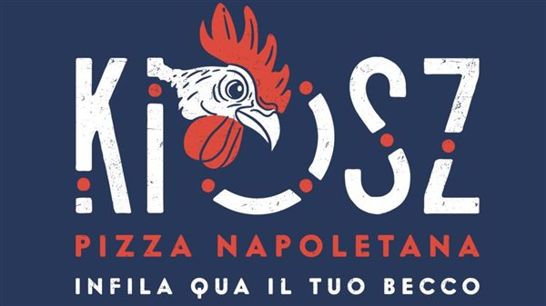
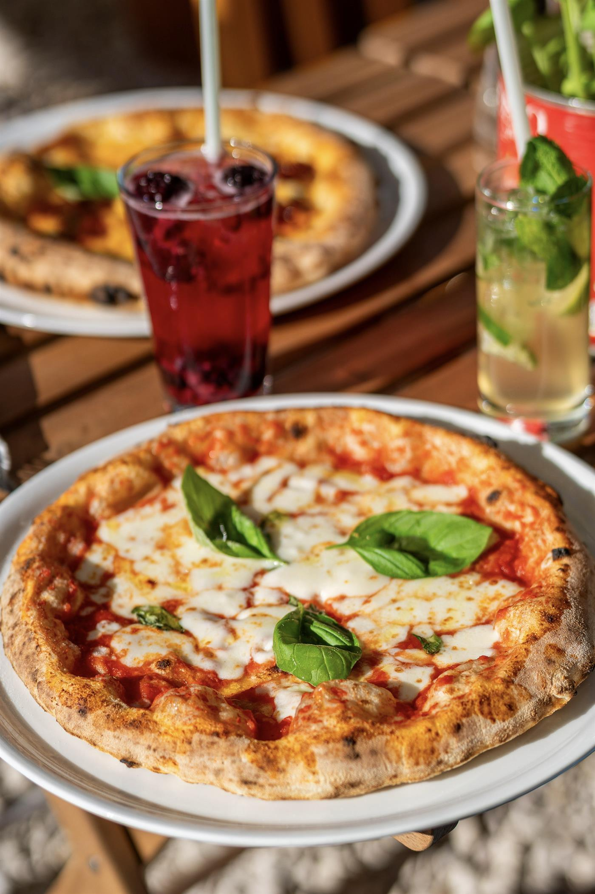
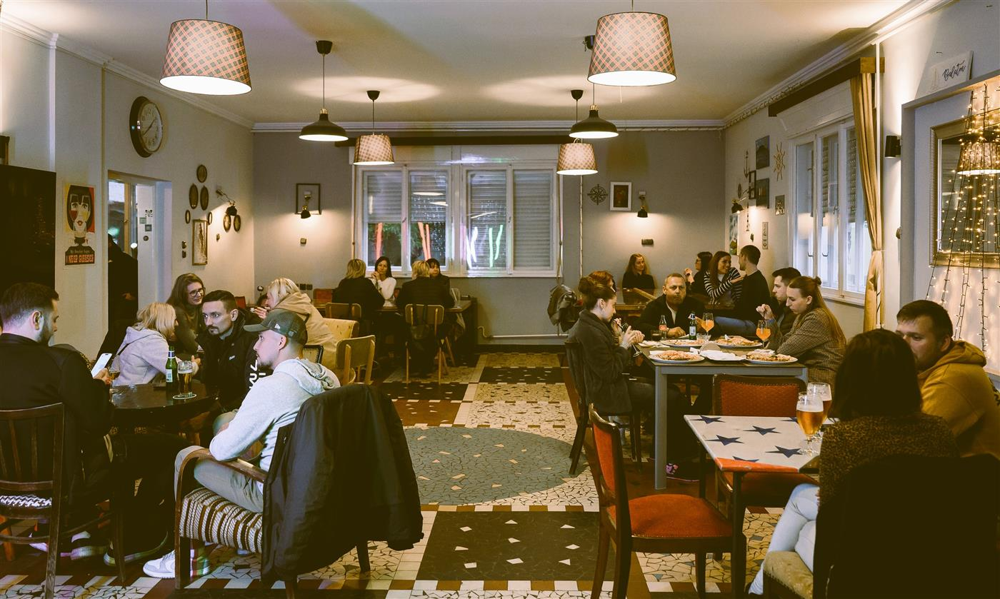
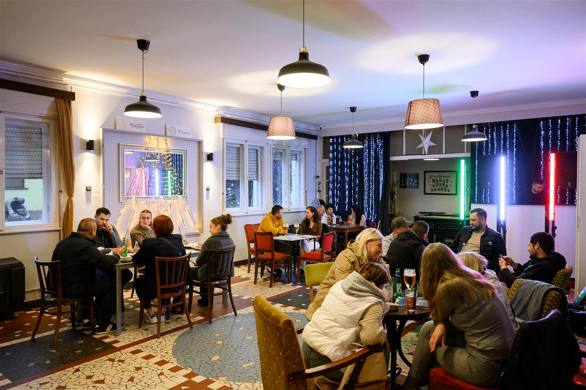

ÉLŐ RENDSZERÁLLAPOT
A felület, amit építek, ugyanúgy viselkedik, mint a rendszer mögötte.
Nem makett. Ez az oldal saját magát figyeli: valós idő, valós görgetési sebesség, valós állapotváltás — pontosan úgy, ahogyan egy rendelés- vagy adminrendszer viselkedik éles környezetben.

KIOSZ Pizza Napoletana
Teljes online rendelési és adminrendszer egy nápolyi pizzériának — a látványtervtől a működő adatbázisig.
/api/v1), keretrendszer nélkül


Rendelés-státusz — élesben használt logika
DEMONSTRÁCIÓ — nem valódi rendelésUgyanaz az állapotgép, amit a KIOSZ admin felület valóban használ a konyhában: a rendelés egy rögzített sorrendben halad, és a kiszállítás/elvitel választás eldönti, mely állapotok érhetők el. Próbáld ki — a lenti gombok valódi, lokális állapotot mozgatnak.
Új rendelés beérkezett — még nincs elfogadva.
Kattints / koppints a próbához — a gomb végigviszi a rendelést az állapotokon.
Vad-Lak
Valós ügyfél. Az oldal jelenleg készül — tartalom hamarosan.
-
01
Egyedi webfejlesztés
Nem sablon, nem oldalépítő — kód, amit értek és karbantartok.
-
02
Rendelés- és foglalási rendszerek
Kosár, admin, állapotkezelés — a KIOSZ rendszer is ebből a tapasztalatból épült.
-
03
Admin panelek és backend
PHP/Node, adatbázis-tervezés, API-k, szerepkör szerinti jogosultságkezelés.
-
04
Webshop
Termékkezeléstől a fizetésig, az adott üzlet igényére felépítve.
-
05
Interaktív frontend / creative development
Mozgás, állapot, mikrointerakció — funkcióval, nem dísznek.
-
06
Teljesítmény, mobil, technikai SEO, karbantartás
A láthatatlan munka, ami eldönti, hogy valaki visszajön-e.
Rólam
DAEKON önálló creative developer márka — nem egy ügynökség kicsinyített mása, hanem egyetlen ember, aki a látványtervtől a működő adatbázisig mindent maga visz végig.
Amit építek: egyedi weboldalak, admin- és rendelésrendszerek, webshopok, backend és adatbázis, API-k, valamint az a réteg, ami mindezekre ráépül — az, amit a látogató ténylegesen használ.
Ez az oldal maga is példa erre: nem statikus makett, hanem egy működő felület, ami figyeli a saját állapotát — görgetést, időt, interakciót — és eszerint viselkedik.
Amit nem csinálok: kitalált ügyfeleket, kitalált számokat, kitalált díjakat. Amit ez az oldal állít, azt vagy meg lehet nézni élesben, vagy egyértelműen jelölve van, hogy demonstráció.
Kapcsolat
Írj pár mondatot arról, mit építenél — az űrlap állapotát valós időben követi az oldal.